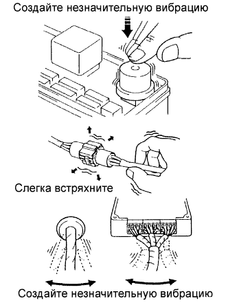
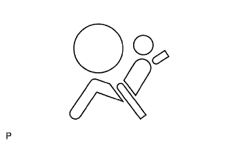

СИСТЕМА ПОДУШЕК БЕЗОПАСНОСТИ > СИСТЕМА ДИАГНОСТИКИ |
| ИМИТАЦИЯ УСЛОВИЙ ВОЗНИКНОВЕНИЯ НЕИСПРАВНОСТИ |
|  |
Метод применения вибрации: В тех случаях, когда предполагается, что основной причиной неисправности является вибрация.
Пальцем слегка потрясите деталь датчика, которая, по предположению, неисправна, и проверьте, возникает ли неисправность.
Слегка встряхните разъем в вертикальном и горизонтальном положениях.
Слегка встряхните жгут проводов по вертикали и горизонтали.
| ФУНКЦИОНИРОВАНИЕ КОНТРОЛЬНОЙ ЛАМПЫ АВАРИЙНОГО СОСТОЯНИЯ SRS |
Первичная проверка.
Выключите зажигание. Подождите не менее 2 секунд, а затем включите зажигание. Контрольная лампа аварийного состояния SRS загорается примерно на 6 секунд, в течение которых выполняется диагностика системы подушек безопасности (включая преднатяжители ремней безопасности).
Непрерывная проверка.
После завершения первичной проверки центральный блок управления системы SRS непрерывно контролирует систему SRS на наличие неисправностей.
Обзор.
Если система подушек безопасности SRS работает нормально:
Контрольная лампа аварийного состояния SRS загорается только на время выполнения первичной проверки (примерно на 6 секунд после включения зажигания).
Если система подушек безопасности SRS неисправна:
| ПРОВЕРЬТЕ КОНТРОЛЬНУЮ ЛАМПУ АВАРИЙНОГО СОСТОЯНИЯ SRS |
|  |
Включите зажигание и проверьте, включилась ли контрольная лампа аварийного состояния SRS примерно на 6 секунд (первичная проверка).
Убедитесь в том, что контрольная лампа аварийного состояния SRS включается примерно на 6 секунд (непрерывная проверка) после включения зажигания.
| РАБОТА КОНТРОЛЬНОЙ ЛАМПЫ ВЫКЛЮЧЕНИЯ ПОДУШЕК БЕЗОПАСНОСТИ |
Первоначальная проверка
Установите замок зажигания в положение ON (ВКЛ).
Контрольная лампа выключения подушек безопасности включается примерно на 4 секунды, а затем выключается примерно на 2 секунды.
Приблизительно через 6 с после включения зажигания контрольная лампа выключения подушек безопасности работает в соответствии с нижеприведенными условиями.
| Выключатель системы SRS | Контрольная лампа выключения подушек безопасности |
| Вкл | Выкл |
| OFF (ВЫКЛ) | On |
| Неисправность выключателя | On |

| ПРОВЕРЬТЕ КОНТРОЛЬНУЮ ЛАМПУ ВЫКЛЮЧЕНИЯ ПОДУШЕК БЕЗОПАСНОСТИ |
 |
Установите замок зажигания в положение ON (ВКЛ).
Проверьте, что контрольная лампа выключения подушек безопасности включается примерно на 4 секунды, а затем выключается примерно на 2 секунды.
| МЕХАНИЗМ ПРЕДОТВРАЩЕНИЯ СРАБАТЫВАНИЯ |
ФУНКЦИОНИРОВАНИЕ МЕХАНИЗМА ПРЕДОТВРАЩЕНИЯ СРАБАТЫВАНИЯ
Механизм предотвращения срабатывания подушки безопасности встроен в разъем цепи пиропатрона (со стороны центрального блока управления системы SRS) во избежание случайного срабатывания подушки безопасности.
При разъединении разъема данный механизм замыкает цепь посредством введения в контакт короткой пружины и контактов и отключения внешнего питания во избежание случайного срабатывания подушки безопасности.
ВЫКЛЮЧЕНИЕ МЕХАНИЗМА ПРЕДОТВРАЩЕНИЯ СРАБАТЫВАНИЯ
Чтобы освободить механизм предотвращения срабатывания, вставьте между контактом и короткой пружиной кусок бумаги такой же толщины, что и контакт вилки (примерно 0,5 мм (0,020 дюйма)) для разрыва соединения.
На рисунках ниже приводятся разъемы, применяемые в механизме предотвращения срабатывания, а также методы их освобождения.